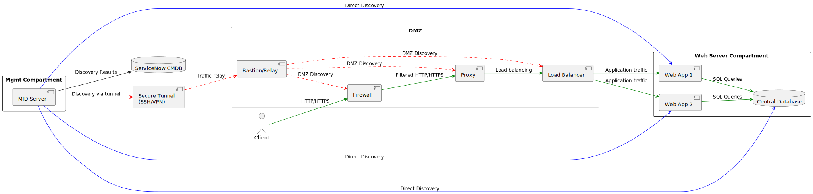

ServiceNow - focus on ITSM / ITAM
CI discovery and population into CMDB
-
ServiceNow CMDB (Configuration Management Database) is a centralized repository that stores detailed information about an organization’s IT assets (Configuration Items, or CIs) and, crucially, their relationships and dependencies. This database acts as the backbone for IT Service Management (ITSM), supporting processes like incident, change, and asset management1-5.
-
Visibility and Relationships: The CMDB not only inventories assets but also maps how they interact and depend on each other. This mapping accelerates troubleshooting, impact analysis, and decision-making by showing, for example, which applications run on which servers, and how business services depend on various infrastructure components1-5.
-
Discovery and Service Mapping: ServiceNow uses automated tools like Discovery to scan the IT environment (on-premises, cloud, virtual) and populate the CMDB with up-to-date information. Service Mapping builds on this by creating dynamic, real-time maps of entire business services, showing all supporting CIs and their interconnections. These maps are always current, reflecting any changes in the IT landscape1-3-4.
-
MID Server: Discovery is performed by a MID Server, an agent installed within your network that communicates securely with ServiceNow in the cloud. The MID Server discovers assets across network segments (including DMZs, if properly configured) and sends the results to the CMDB2-4.
-
Design and Security: Best practices recommend strategically placing MID Servers to maximize network visibility while minimizing firewall exceptions. For DMZs, you can use a single MID Server with secure tunnels or open specific ports as needed. Bastion or relay hosts can be used to securely relay discovery traffic into restricted segments, though these are not native ServiceNow components but standard IT security practices2.
-
Benefits: ServiceNow CMDB and its discovery tools provide real-time, accurate visibility of your IT environment, reduce downtime, optimize resources, support compliance, and improve the efficiency of IT operations by automating asset tracking and relationship mapping1-5.
In short, ServiceNow’s CMDB, Discovery, and Service Mapping combine to give organizations a dynamic, always-updated map of their IT landscape, making IT management more efficient, secure, and data-driven1-3-4.

ServiceNow discovery for a web app service
@startuml
left to right direction
'--- Management Compartment ---
rectangle "Mgmt Compartment" {
component "MID Server" as MID
}
'--- Secure Tunnel to DMZ ---
component "Secure Tunnel\n(SSH/VPN)" as TUNNEL
'--- DMZ ---
rectangle "DMZ" {
component Firewall
component Proxy
component "Load Balancer" as LB
component "Bastion/Relay" as RELAY
}
'--- Web Server Compartment ---
rectangle "Web Server Compartment" {
component "Web App 1" as App1
component "Web App 2" as App2
database "Central Database" as DB
}
'--- ServiceNow Cloud ---
database "ServiceNow CMDB" as CMDB
'--- Direct Discovery (blue) ---
MID -[#blue]-> App1 : Direct Discovery
MID -[#blue]-> App2 : Direct Discovery
MID -[#blue]-> DB : Direct Discovery
'--- Discovery via tunnel (red) ---
MID -[#red,dashed]-> TUNNEL : Discovery via tunnel
TUNNEL -[#red,dashed]-> RELAY : Traffic relay
RELAY -[#red,dashed]-> Firewall : DMZ Discovery
RELAY -[#red,dashed]-> Proxy : DMZ Discovery
RELAY -[#red,dashed]-> LB : DMZ Discovery
'--- CMDB Storage ---
MID --> CMDB : Discovery Results
'--- Data Traffic (green) ---
actor Client
Client -[#green]-> Firewall : HTTP/HTTPS
Firewall -[#green]-> Proxy : Filtered HTTP/HTTPS
Proxy -[#green]-> LB : Load balancing
LB -[#green]-> App1 : Application traffic
LB -[#green]-> App2 : Application traffic
App1 -[#green]-> DB : SQL Queries
App2 -[#green]-> DB : SQL Queries
@enduml
Ways to Access to ServiceNow CMDB
ServiceNow User Interface (UI)
- Direct access: Users with the appropriate role (such as
cmdb_read) can log in to the ServiceNow instance and use the navigation menu to access the CMDB. By searching for "Configuration" or specific CI classes, users can browse, search, and view configuration items and their details directly in the web interface7-8. - Dashboards and Portals: ServiceNow provides dashboards and portals for visualizing and interacting with CMDB data without needing to access raw tables8.
- Manual entry: Users can also manually add, edit, or delete CI records through forms in the UI6-9.
APIs (REST/SOAP)
- REST API: ServiceNow exposes RESTful APIs that allow you to programmatically access, query, create, update, or delete CMDB data. You can use these APIs to integrate with external applications, automate data extraction, or synchronize with other systems10.
- Example endpoint:
https://.service-now.com/api/now/table/cmdb_ci_computer - Authentication: Access via API requires authentication, typically using OAuth tokens or basic authentication, and is subject to the permissions assigned to the user or application10.
Import Sets and Integrations
- Import Sets: You can import data into the CMDB from external sources (like CSV, Excel, databases) using Import Sets. This allows bulk loading or updating of CI data, which is then mapped to the appropriate CMDB tables6-9.
- Integrations: ServiceNow supports integration with other IT management tools (asset management, network monitoring, etc.) via connectors, scripts, or middleware, to automatically populate or update the CMDB6-9.
Discovery Tools
- ServiceNow Discovery: Automated discovery tools scan your IT environment and populate the CMDB with up-to-date information about assets and their relationships6-9.
Access summary
You can access and interact with the ServiceNow CMDB through the web interface, REST/SOAP APIs, import sets, integrations with other systems, and automated discovery tools. The method you choose depends on whether you want to view, manually edit, automate, or integrate CMDB data with other platforms. Access is always governed by assigned roles and permissions within ServiceNow6-7-8-10.
ConnectNow
In summary: ServiceNow ConnectNow is a built-in collaboration tool for real-time chat, messaging, and document sharing inside ServiceNow. It is not used for accessing or integrating with the CMDB; for that, you would use APIs or specialized connectors
API and integration tools
ServiceNow offers a wide range of APIs and integration tools to enable automation, data exchange, and system integration both inside and outside the ServiceNow platform. Here’s an overview of the main types of APIs available within ServiceNow, along with some specific examples11-12-13-14:
Web Services APIs
- REST API:
The most widely used, allowing CRUD (Create, Read, Update, Delete) operations on ServiceNow tables, including the CMDB, incidents, users, etc. - Example:
/api/now/table/cmdb_ci_computer - SOAP API:
Used for structured, secure integrations, especially with legacy systems. - Attachment API:
For uploading, downloading, and managing file attachments on records.
Table API
- Provides generic access to any ServiceNow table (including custom tables) for querying, creating, updating, or deleting records via REST or SOAP11.
Specialized APIs
- CMDB Instance API:
For advanced operations on configuration items, relationships, and metadata in the CMDB. - Import Set API:
For bulk importing data into staging tables before mapping to target tables. - Knowledge Management API:
For accessing and managing knowledge base articles. - Service Catalog API:
For interacting with catalog items, orders, and requests. - User and Group APIs:
For managing users, groups, and roles. - Attachment API:
For handling file attachments. - Batch API:
For executing multiple REST API calls in a single request.
IntegrationHub and ETL
- IntegrationHub:
Provides low-code connectors (“spokes”) for integrating with popular third-party applications and platforms. - IntegrationHub ETL:
For extracting, transforming, and loading (ETL) data into ServiceNow, especially for CMDB ingestion12-13-14.
JavaScript APIs
- For advanced scripting and automation within ServiceNow, including server-side and client-side scripting12-13-14.
Event-driven and Custom APIs
- Scripted REST APIs:
Create custom REST endpoints for bespoke integrations. - Webhooks/Event-driven APIs:
Trigger ServiceNow actions based on external events (including support for Kafka and other event brokers)14.
MID Server APIs
- Securely connect ServiceNow to on-premises systems behind firewalls for discovery, orchestration, and integrations12-13-14.
Reporting and Analytics APIs
- For extracting reports, analytics, and metric data from ServiceNow.
Examples of Specific API Endpoints (not exhaustive)11:
/api/now/table/{tableName}(Table API)/api/now/cmdb/instance/{className}(CMDB Instance API)/api/now/attachment(Attachment API)/api/now/import/{importSetTable}(Import Set API)/api/now/knowledge/{articleId}(Knowledge Management)/api/now/service_catalog/{catalogId}(Service Catalog API)/api/now/batch(Batch API)
API's summary:
ServiceNow provides REST and SOAP APIs for nearly every module, specialized APIs for key business functions (CMDB, Knowledge, Catalog, Users, etc.), low-code integration tools (IntegrationHub), and the ability to create custom APIs and webhooks. This comprehensive API suite allows you to automate, integrate, and extend ServiceNow to meet virtually any business need11-12-13-14.
ServiceNow PO ITSM + ITAM
A ServiceNow Product Owner specializing in IT Service Management (ITSM) and Asset Management (ITAM) is responsible for maximizing the value of these modules within the ServiceNow platform. Here’s what such a PO typically works on, based on industry standards and job descriptions15-16-17-18-19-20:
Key Responsibilities
1. Strategic Vision & Roadmap - Define and maintain the product vision and roadmap for ITSM and ITAM modules, ensuring alignment with business objectives, compliance, and best practices15-16-19. - Stay updated on ServiceNow’s new features and industry trends to leverage improvements for efficiency and user experience15-19.
2. Stakeholder Engagement - Act as the main liaison between business stakeholders, IT teams, asset managers, and ServiceNow platform teams16-17-19. - Gather, clarify, and prioritize requirements from various business units and ensure they are reflected in the backlog17-20.
3. Backlog & User Story Management - Translate business needs into clear user stories and acceptance criteria for ITSM and ITAM features17-18-20. - Prioritize the backlog based on business value, compliance, risk, and user needs16-17.
4. Solution Design & Implementation - Lead the configuration, customization, and integration of ITSM and ITAM modules, including hardware and software asset management, automation workflows, and process improvements15-16-19. - Oversee the design and delivery of solutions, ensuring they meet requirements and quality standards19.
5. Process Optimization & Continuous Improvement - Analyze existing ITSM and asset management processes, identify gaps, and drive process re-engineering and automation16-19. - Monitor KPIs, user feedback, and analytics to propose and implement enhancements15-16.
6. Change Management & Adoption - Develop and execute change management strategies to ensure smooth adoption of new features and processes15. - Provide training, documentation, and support to end-users and stakeholders15-17.
7. Compliance, Risk, & Reporting - Ensure that ITAM processes support regulatory, audit, and security requirements16-19. - Drive reporting and analytics to support decision-making and demonstrate value16.
8. Agile Leadership - Participate in agile ceremonies (backlog refinement, sprint planning, demos, retrospectives)20. - Collaborate closely with developers, architects, and business analysts to deliver high-quality solutions19-20.
Typical Deliverables
- Product roadmap and release plans for ITSM and ITAM
- Well-defined and prioritized backlog of user stories
- Configured and customized ServiceNow modules for ITSM and ITAM
- Process documentation and training materials
- Reports and dashboards for asset tracking, compliance, and service performance
PO ITSM + ITAM summary:
A ServiceNow Product Owner focused on ITSM and Asset Management is responsible for translating business needs into actionable solutions, driving process optimization, ensuring compliance, and maximizing the value delivered by ServiceNow’s ITSM and ITAM modules—while continuously engaging with stakeholders and leading agile delivery teams15-16-17-18-19-20.
ServiceNow CMDB CRUD API
The ServiceNow CMDB CRUD API allows you to Create, Read, Update, and Delete configuration item (CI) records in the CMDB using standard RESTful web service calls. Here’s how it works and what you need to know:
API Setup & Authentication
- First, enable the REST API in your ServiceNow instance and set up authentication (typically OAuth or basic auth).
- You’ll use access tokens or credentials to authenticate external applications or scripts that interact with the API21.
Endpoints and Resources
- Each CMDB table (e.g.,
cmdb_ci_computerfor computers,cmdb_ci_network_adapterfor network adapters) has its own REST endpoint. - Example endpoint to access computers in the CMDB:
https://.service-now.com/api/now/table/cmdb_ci_computer - The endpoint name matches the table name in ServiceNow21.
CRUD Operations
| Operation | HTTP Method | Description | Example |
|---|---|---|---|
| Create | POST | Add a new CI record | Send a POST request with the CI data in the body22-24 |
| Read | GET | Retrieve CI records (all or by sys_id) | Send a GET request to the endpoint, optionally with query parameters22-24 |
| Update | PUT/PATCH | Update an existing CI record | Send a PUT or PATCH request with the sys_id and updated data22-24 |
| Delete | DELETE | Remove a CI record | Send a DELETE request with the sys_id of the record22-24 |
Examples:
- Create a CI (POST):
POST https://.service-now.com/api/now/table/cmdb_ci_computer Body: { "name": "Server01", "location": "Data Center 1" } - Read CIs (GET):
GET https://.service-now.com/api/now/table/cmdb_ci_computer?sysparm_query=name=Server01 - Update a CI (PATCH):
PATCH https://.service-now.com/api/now/table/cmdb_ci_computer/ Body: { "location": "Data Center 2" } - Delete a CI (DELETE):
DELETE https://.service-now.com/api/now/table/cmdb_ci_computer/
Permissions and Roles
- Only users with the appropriate roles (like
admin,web_service_admin, orrest_api_explorer) can perform CRUD operations via the API22. - Access can be further restricted based on ServiceNow ACLs and table permissions.
Use Cases
- Integrate external tools with ServiceNow CMDB for automated asset updates21-23.
- Bulk import, update, or clean up CI data.
- Synchronize CMDB with other IT management or monitoring platforms.
ServiceNow CMDB CRUD API summary:
The ServiceNow CMDB CRUD API is a powerful REST interface that lets you programmatically manage configuration items in your CMDB. You can create, read, update, and delete CIs using standard HTTP methods and endpoints mapped to CMDB tables, provided you have the right permissions and authentication21-22-24.
Certainly! Here’s a summary of each key ServiceNow CMDB automation component, with the main ServiceNow features or modules used for each:
Summary of ServiceNow Automation components
Automated CI Classification
Features in use: - Discovery (automatically identifies and classifies CIs) - Identification and Reconciliation Engine (IRE) - CMDB Class Manager - Business Rules (for custom classification logic)
Dynamic Grouping
Features in use: - CMDB Query Builder (for building dynamic queries) - Dynamic CI Groups (auto-updating groups based on queries) - Tags (used as criteria for grouping) - Scheduled Jobs (for regular group updates)
Tag Automation
Features in use: - Business Rules (auto-assign tags based on CI attributes) - Flow Designer (for tag-based automation and workflow triggers) - Script Includes (for advanced tagging logic) - Cloud Discovery (imports cloud tags for automation)
Discovery & Integration
Features in use: - ServiceNow Discovery (automated asset and relationship population) - IntegrationHub (connects to external data sources) - Import Sets (bulk data import and mapping) - MID Server (secure on-premises discovery and integration)
Reconciliation & Data Integrity
Features in use: - Identification and Reconciliation Engine (IRE) - Data Certification (scheduled reviews of CI data) - Duplicate CI Remediation (tools for merging/cleaning records) - Business Rules (enforce data integrity constraints)
Workflow Triggers
Features in use: - Flow Designer (triggers actions based on CI changes, tags, or group membership) - Business Rules (for real-time automation) - Notifications (automatic alerts based on events) - Event Management (for complex, multi-step workflow automation)
-
https://dev.to/emily_assetloom/understanding-the-cmdb-in-servicenow-672 ↩↩↩↩↩
-
https://www.discoveryadmin.com/get-started/servicenow-discovery-design ↩↩
-
https://www.servicenow.com/products/it-operations-management/what-is-service-mapping.html ↩↩
-
https://www.servicenow.com/content/dam/servicenow-assets/public/en-us/doc-type/resource-center/white-paper/wp-itom-visibility-security-overview.pdf ↩↩↩
-
https://www.linkedin.com/pulse/understanding-servicenow-cmdb-comprehensive-guide-michael-moch ↩↩↩
-
https://www.servicenow.com/community/developer-forum/what-are-th-various-ways-to-populate-data-in-cmdb/td-p/2502995 ↩↩↩↩↩
-
https://www.servicenow.com/community/cmdb-forum/cmdb-access-for-cmdb-read/m-p/240125 ↩↩
-
https://www.servicenow.com/community/itom-forum/granting-users-read-only-access-to-cmdb/m-p/976204 ↩↩↩
-
https://virima.com/blog/the-power-of-servicenow-cmdb-api-integrating-with-external-applications ↩↩↩
-
https://docs.celigo.com/hc/en-us/articles/12986904637467-Available-ServiceNow-APIs ↩↩↩↩
-
https://www.servicenow.com/it/products/api-integrations.html ↩↩↩↩↩
-
https://www.servicenow.com/au/products/api-integrations.html ↩↩↩↩↩
-
https://www.servicenow.com/products/api-integrations.html ↩↩↩↩↩↩
-
https://www.summitag.ch/current-vacancies/itsm/servicenow-product-owner ↩↩↩↩↩↩↩↩
-
https://www.talentis.global/job/director-it-asset-management-product-owner-servicenow/ ↩↩↩↩↩↩↩↩↩↩
-
https://www.softwareverdict.co/it-service-management-itsm-product-owner/ ↩↩↩
-
https://www.linkedin.com/jobs/view/servicenow-technical-product-owner-it-asset-management-itam-automations-and-app-engine-at-worley-4190998034 ↩↩↩↩↩↩↩↩↩↩
-
https://www.tealhq.com/job/itsm-service-now-product-owner_75a72738-3bd2-4776-81c7-39aee1c47385 ↩↩↩↩↩↩
-
https://virima.com/blog/the-power-of-servicenow-cmdb-api-integrating-with-external-applications ↩↩↩↩
-
https://www.youtube.com/watch?v=_cdIsZGmq08 ↩